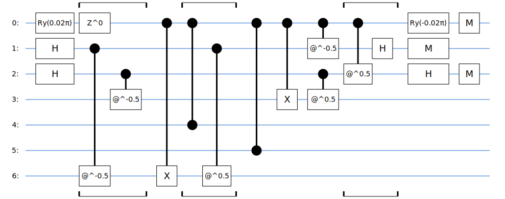

# Installation of dependencies.
!pip install git+https://github.com/goodchemistryco/Tangelo.git@develop --quiet
!pip install qulacs --quiet
!pip install pyscf --quietCode for “Non-unitary Coupled Cluster on Gate-based Quantum Computers”
This companion notebook is intended to provide access to the code used to generate results in the publication titled “Non-unitary Coupled Clusters on Gate-based Quantum Computers,” as published in arXiv:2406.11574 in June 2024. It is possible that by the time you read this, the work below may have been streamlined thanks to additional features in Tangelo. Please check the documentation. Also, the notebook was executed with the packages tangelo==0.4.3, qulacs==0.6.4.1 and pyscf==2.6.1.
This work focuses on state preparation, aiming to efficiently prepare quantum states using both classical and quantum methods. Many quantum algorithms rely on high-quality initial states for optimal performance. Efficiently preparing these states can significantly reduce the computational cost of probabilistic algorithms such as quantum phase estimation (QPE). Fortunately, in quantum chemistry applications, generating approximate wave functions for molecular systems is well-studied. Quantum computing stands to benefit from directly importing these classical methods into quantum circuits. In this work, we propose a state preparation method based on coupled cluster (CC) theory, a cornerstone of quantum chemistry on classical computers. Our approach incorporates mid-circuit measurements into the circuit construction.
This state preparation protocol involves:
- Computing coupled cluster amplitudes using a classical quantum chemistry package,
- Converting these amplitudes into rotation angles, described in Equation 9 of the paper,
- Executing the circuit as illustrated in Figure 3 of the paper until all measurement outcomes are 0.
This notebook includes the code necessary to replicate the results presented in the publication.
NUCCSD code
The primary goal of this method is to implement the state transformation:
\[ \ket{\psi} \rightarrow \frac{e^{\alpha \hat{a}^{\dagger}_p \hat{a}_q} \ket{\psi}}{\|e^{\alpha \hat{a}^{\dagger}_p \hat{a}_q} \ket{\psi} \|} \]
where \(\alpha\) represents the classically computed CC amplitude. The full CC state is constructed using sequences of exponentiated cluster operators, achieved through trotterization.
Initially, the CC amplitudes are computed classically, as illustrated in the code cell below. This work specifically focuses on treating single and double excitation terms comprehensively, starting from unrestricted mean fields due to their compatibility with subsequent Jordan-Wigner mapping.
from tangelo.algorithms.classical import CCSDSolver
def unrestricted_ccsd_params(mol):
"""Compute the classical CCSD energy and amplitudes.
Args:
mol (SecondQuantizedMolecule): Self-explanatory.
Returns:
(array of floats, float): CC amplitudes and energy.
"""
solver = CCSDSolver(mol)
e_uccsd = solver.simulate()
t1, t2 = solver.solver.cc_fragment.t1, solver.solver.cc_fragment.t2
params = uccsd_openshell_get_packed_amplitudes(
t2[0], # alpha-alpha terms.
t2[2], # beta-beta terms.
t2[1], # alpa-beta terms.
mol.n_active_ab_electrons[0],
mol.n_active_ab_electrons[1],
mol.n_active_mos[0],
mol.n_active_mos[1],
alpha_single_amplitudes=t1[0],
beta_single_amplitudes=t1[1]
)
return params, e_uccsdWe first define the functions to create the circuit primitives, as defined in the article. Their purposes can be found in their respective docstrings.
from math import pi
from tangelo.linq import Gate, Circuit
def single_exc(pq, plus_qubits, coeff_qubit, theta):
"""Single excitation CCSD circuit.
The operator applied is a_p^{\dagger} a_q, assuming p > q.
Args:
pq (iterable of int): Indices representing the unoccupied and occupied spinorbitals.
plus_qubits (iterable of int): Qubit indices of the |+> qubits.
coeff_qubit (iterable of int): Qubit index for the coefficient.
theta (float): Rotation angle to apply the proper amplitude.
Returns:
Circuit: Quantum circuit representing a single excitation term in CCSD.
"""
sign = 1 if theta < 0. else 0
rot = abs(theta)
p, q = pq
plus_p, plus_q = plus_qubits
# We are working in the single-reference CC. The reference state is expected
# to be a single reference state where lowest lying orbitals are filled
# first.
assert p > q
gates = [Gate("H", i) for i in plus_qubits]
gates += [Gate("RY", coeff_qubit, parameter=rot, is_variational=True),
Gate("PHASE", coeff_qubit, parameter=sign*pi, is_variational=True)]
gates += [Gate("CPHASE", p, parameter=-pi/2, control=plus_p),
Gate("CPHASE", q, parameter=-pi/2, control=plus_q)]
# PQ excitation.
gates += [Gate("CX", p, control=coeff_qubit)]
gates += [Gate("CZ", i, control=coeff_qubit) for i in range(q+1, p)]
gates += [Gate("CX", q, control=coeff_qubit)]
gates += [Gate("CPHASE", p, control=plus_p, parameter=pi/2),
Gate("CPHASE", q, control=plus_q, parameter=pi/2),
Gate("CPHASE", plus_p, control=coeff_qubit, parameter=-pi/2),
Gate("CPHASE", plus_q, control=coeff_qubit, parameter=pi/2)]
gates += [Gate("H", i) for i in plus_qubits]
gates += [Gate("RY", coeff_qubit, parameter=-rot, is_variational=True)]
gates += [Gate("MEASURE", q) for q in coeff_qubit+plus_qubits]
return Circuit(gates)
def double_exc(pqrs, plus_qubits, coeff_qubit, theta):
"""Double excitation CCSD circuit.
The operator applied is a_p^{\dagger} a_q a_r^{\dagger} a_s, assuming p > q and r > s.
Args:
pqrs (iterable of int): Indices representing the occupied and unoccupied spinorbitals (twice).
plus_qubits (iterable of int): Qubit indices of the |+> qubits.
coeff_qubit (int): Qubit index for the coefficient.
theta (float): Rotation angle to apply the proper amplitude.
Returns:
Circuit: Quantum circuit representing a double excitation term in CCSD.
"""
sign = 1 if theta < 0. else 0
rot = abs(theta)
p, q, r, s = pqrs
plus_p, plus_q, plus_r, plus_s = plus_qubits
# We are working in the single-reference CC. The reference state is expected
# to be a single reference state where lowest lying orbitals are filled
# first.
assert (p > q) and (r > s)
gates = [Gate("H", i) for i in plus_qubits]
gates += [Gate("RY", coeff_qubit, parameter=rot, is_variational=True),
Gate("PHASE", coeff_qubit, parameter=sign*pi, is_variational=True)]
gates += [Gate("CPHASE", p, parameter=-pi/2, control=plus_p),
Gate("CPHASE", q, parameter=-pi/2, control=plus_q),
Gate("CPHASE", r, parameter=-pi/2, control=plus_r),
Gate("CPHASE", s, parameter=-pi/2, control=plus_s)]
# RS excitation.
gates += [Gate("CX", s, control=coeff_qubit)]
gates += [Gate("CZ", i, control=coeff_qubit) for i in range(s+1, r)]
gates += [Gate("CX", r, control=coeff_qubit)]
# PQ excitation.
gates += [Gate("CX", q, control=coeff_qubit)]
gates += [Gate("CZ", i, control=coeff_qubit) for i in range(q+1, p)]
gates += [Gate("CX", p, control=coeff_qubit)]
gates += [Gate("CPHASE", s, parameter=pi/2, control=plus_s),
Gate("CPHASE", r, parameter=pi/2, control=plus_r),
Gate("CPHASE", q, parameter=pi/2, control=plus_q),
Gate("CPHASE", p, parameter=pi/2, control=plus_p)]
gates += [Gate("CPHASE", plus_p, control=coeff_qubit, parameter=-pi/2),
Gate("CPHASE", plus_q, control=coeff_qubit, parameter=pi/2),
Gate("CPHASE", plus_r, control=coeff_qubit, parameter=-pi/2),
Gate("CPHASE", plus_s, control=coeff_qubit, parameter=pi/2)]
gates += [Gate("H", i) for i in plus_qubits]
gates += [Gate("RY", coeff_qubit, parameter=-rot, is_variational=True)]
gates += [Gate("MEASURE", q) for q in coeff_qubit+plus_qubits]
return Circuit(gates)Next, the CC amplitudes can be converted to rotation parameters \(\theta\) through the equation
\[ \frac{\cos^2{(\theta/2)} \ket{\psi} \pm \sin^2{(\theta/2)} \hat{a}_{p}^{\dagger} \hat{a}_q \ket{\psi}}{\sqrt{\cos^4{(\theta/2)} + \sin^4{(\theta/2)}}} \approx \left(I + \alpha \hat{a}_{p}^{\dagger} \hat{a}_q\right) \ket{\psi}. \]
import numpy as np
def map_amps_to_ry_thetas(amps):
"""Convert CC amplitudes to RY rotation angles.
Args:
amps (float or array of float): CC amplitudes.
Returns:
float or array of float: RY rotation angles corresponding to the CC amplitudes.
"""
amplitudes = np.array(amps, dtype=float)
coeff = (amplitudes**2/(1-amplitudes**2))**(1/4)
return np.sign(amplitudes)*2*np.arctan(coeff)For example, the operator \(e^{0.001 \hat{a}_6\hat{a}_3}\) can be mapped to a quantum circuit using the map_amps_to_ry_thetas and single_exc functions.
theta = map_amps_to_ry_thetas(0.001)
single_exc_circ = single_exc(pq=(6,3), plus_qubits=(1,2), coeff_qubit=(0,), theta=theta)
single_exc_circ.draw()
This circuit describes the scenario where a cluster operator contains only a single operator. However, in routine quantum chemistry calculations, this situation is uncommon, and practitioners typically employ the first-order Suzuki-Trotter approximation:
\[ \ket{\psi} = e^{T_1+T_2} \ket{\psi_0} \approx e^{T_1}e^{T_2} \ket{\psi_0}, \]
to decompose the exponentiated sum of operators into a product of exponentiated operators. While not mathematically exact, the errors resulting from this approximation are generally small. This approximation holds well in practice for cluster operators, where a corresponding ground state typically yields small amplitudes.
In the following code cell, we define an ansatz NUCCSD that utilizes mid-circuit measurements to implement single and double cluster operators. Most of the code below is copy-pasted from other examples of ansatz classes in Tangelo.
from collections import OrderedDict
from tangelo.toolboxes.ansatz_generator import Ansatz
from tangelo.toolboxes.qubit_mappings.statevector_mapping import get_reference_circuit
from tangelo.toolboxes.ansatz_generator._unitary_cc_openshell import uccsd_openshell_paramsize, uccsd_openshell_generator, uccsd_openshell_get_packed_amplitudes
class NUCCSD(Ansatz):
"""Construct non-unitary CC states on quantum circuits.
Uses mid-circuit measurements to implement fermionic creation and annihilation
operators, as well as performing amplitude injections. Only supports the Jordan-Wigner (JW)
occupation mapping.
Args:
n_sos (int): Number of spin-orbitals.
n_electrons (int): Number of electrons.
up_then_down (bool): Flag indicating spin-orbital ordering.
verbose (bool): Flag for verbose output.
"""
def __init__(self, n_sos, n_electrons, up_then_down=False, verbose=False):
# Set the number of alpha/beta spinorbitals according to the input "n_sos".
if isinstance(n_sos, (tuple, list)) and len(n_sos) == 2:
self.n_sos_a, self.n_sos_b = n_sos
self.n_alpha, self.n_beta = n_electrons
elif isinstance(n_sos, int):
assert n_sos % 2 == 0, "The total number of spin-orbitals should be even when reference is RHF or ROHF."
self.n_sos_a = self.n_sos_b = n_sos // 2
else:
raise NotImplementedError
# Set the number of alpha/beta electrons according to the input "n_electrons".
if isinstance(n_electrons, (tuple, list)) and len(n_electrons) == 2:
self.uhf = True
self.n_alpha, self.n_beta = n_electrons
self.n_singles, self.n_doubles, _, _, _, _, _ = uccsd_openshell_paramsize(
self.n_alpha, self.n_beta, self.n_sos_a, self.n_sos_b)
elif isinstance(n_electrons, int):
self.uhf = False
self.n_alpha = self.n_beta = n_electrons // 2
self.n_alpha += n_electrons % 2
else:
raise NotImplementedError
self.n_singles, self.n_doubles, _, _, _, _, _ = uccsd_openshell_paramsize(
self.n_alpha, self.n_beta, self.n_sos_a, self.n_sos_b)
self.spin = self.n_alpha - self.n_beta
self.up_then_down = up_then_down
self.n_var_params = self.n_singles + self.n_doubles
self.supported_reference_state = {"HF"}
self.supported_initial_var_params = {"zeros"}
self.var_params_default = "zeros"
self.reference_state = "HF"
self.var_params = None
self.circuit = Circuit()
self.verbose = verbose
@property
def n_spinorbitals(self):
return self.n_sos_a + self.n_sos_b
@property
def n_electrons(self):
return self.n_alpha + self.n_beta
@property
def n_measure_gates(self):
return self.circuit.counts.get("MEASURE", 0)
@property
def max_n_measure_gates(self):
return 3*self.n_singles + 5*self.n_doubles
def set_var_params(self, var_params=None):
"""Initialize variational parameters as ones, zeros, random numbers, or
any other values.
"""
if var_params is None:
var_params = self.var_params_default
if isinstance(var_params, str):
var_params = var_params.lower()
if (var_params not in self.supported_initial_var_params):
raise ValueError(f"Supported keywords for initializing variational parameters: {self.supported_initial_var_params}")
applied_var_params = np.zeros((self.n_var_params,), dtype=float)
else:
applied_var_params = np.array(var_params)
if applied_var_params.size != self.n_var_params:
raise ValueError(f"Expected {self.n_var_params} variational parameters but "
f"received {applied_var_params.size}.")
self.var_params = applied_var_params
return self.var_params
def prepare_reference_state(self):
"""Return circuit preparing the desired reference wavefunction (HF)."""
if self.reference_state not in self.supported_reference_state:
raise ValueError(f"Only supported reference state methods are: {self.supported_reference_state}")
return get_reference_circuit(n_spinorbitals=self.n_spinorbitals,
n_electrons=self.n_electrons,
mapping="JW",
up_then_down=self.up_then_down,
spin=self.spin)
def build_circuit(self, var_params=None, cc_op=None, ccop_order=None):
"""Build and return the quantum circuit implementing the ansatz."""
self.set_var_params(var_params)
n_qubits = self.n_spinorbitals
# Ancilla qubit indices.
single_coeff_qubit = (n_qubits,)
single_plus_qubits = (n_qubits + 1, n_qubits + 2)
double_coeff_qubit = (n_qubits,)
double_plus_qubits = (n_qubits + 1, n_qubits + 2, n_qubits + 3, n_qubits + 4)
if cc_op is None:
# Last argument to False gives the non-unitary variant.
cc_op = uccsd_openshell_generator(self.var_params,
self.n_alpha, self.n_beta,
self.n_sos_a, self.n_sos_b,
anti_hermitian=False)
# Initial HF circuit.
self.circuit = self.prepare_reference_state()
self.var_param_to_gate_index = dict()
# Here we can change the cluster operator trotterization ordering.
if ccop_order is not None:
cc_op_dict = OrderedDict()
for term in ccop_order:
cc_op_dict[term] = cc_op.terms[term]
else:
cc_op_dict = OrderedDict(cc_op.terms)
for i, (term, param) in enumerate(cc_op_dict.items()):
theta = map_amps_to_ry_thetas(param).real
if len(term) == 2:
pq = term[0][0], term[1][0]
self.circuit += single_exc(pq, single_plus_qubits, single_coeff_qubit, theta)
pass
elif len(term) == 4:
pqrs = term[0][0], term[1][0], term[2][0], term[3][0]
self.circuit += double_exc(pqrs, double_plus_qubits, double_coeff_qubit, theta)
else:
raise RuntimeError("Unrecognized FermionOperator term.")
# Will keep track of the first RY gate, the second one is at the
# index i+2. Index is at len(circuit._variational_gates) - 3 because
# 1 RY + PHASE + 1RYdag gates.
self.var_param_to_gate_index[i] = len(self.circuit._variational_gates) - 3
if self.verbose:
resources = self.circuit.counts | {"n_qubits": self.circuit.width}
print(f"Resource estimation: {resources}")
return self.circuit
def update_var_params(self, var_params):
"""Updating the value of variational parameters could be possible
to do here, but it is out of scope for this work.
"""
passTest set
The molecular set selected consists of small molecules, chosen specifically for testing the algorithm on emulators (classical computers). These simple molecules were also selected to verify the algorithm’s accuracy on both closed-shell and open-shell systems.
molecules = {
"H2": {"xyz": "H 0.0 0.0 0.0\nH 0.0 0.0 0.7414", "q": 0, "spin": 0},
"H3": {"xyz": "H 0.0 0.0 0.0\nH 0.0 0.0 1.\nH 0.0 0.0 2.", "q": 0, "spin": 1},
"H4": {"xyz": "H 0.0 0.0 0.0\nH 0.0 0.0 1.\nH 0.0 0.0 2.\nH 0.0 0.0 3.", "q": 0, "spin": 0},
"LiH": {"xyz": "Li 0.0 0.0 0.0\nH 0.0 0.0 1.5949", "q": 0, "spin": 0},
"BeH2":{"xyz": "Be 0.0 0.0 0.0\nH 0.0 0.0 1.3264\nH 0.0 0.0 -1.3264", "q": 0, "spin": 0},
"BH3": {"xyz": "B 0.0 0.0 0.0\nH 0.0 1.19 0.0\nH 1.0306 -0.5950 0.0\nH -1.0306 -0.5950 0.0", "q": 0, "spin": 0},
"NH3": {"xyz": "N 0.0 0.0 0.0\nH 0.0 -0.9377 -0.3816\nH 0.8121 0.4689 -0.3816\nH -0.8121 0.4689 -0.3816", "q": 0, "spin": 0},
"H2O": {"xyz": "O 0.0 0.0 0.1173\nH 0.0 0.7572 -0.4692\nH 0.0 -0.7572 -0.4692", "q": 0, "spin": 0},
"HF": {"xyz": "F 0.0 0.0 0.0\nH 0.0 0.0 0.9168", "q": 0, "spin": 0},
"OH": {"xyz": "O 0.0 0.0 0.0\nH 0.0 0.0 0.9697", "q": 0, "spin": 1},
}In the next cell, for each molecule, the CCSD solution is computed, the amplitudes are converted into rotation angles, circuits are constructed, and energy evaluations are performed.
from tangelo import SecondQuantizedMolecule
from tangelo.linq import get_backend
from tangelo.toolboxes.qubit_mappings.mapping_transform import fermion_to_qubit_mapping
# Qulacs is a fast emulator we can use with Tangelo.
backend = get_backend("qulacs")
for name, data in molecules.items():
print(name)
# Generate the qubit Hamiltonian.
mol = SecondQuantizedMolecule(data["xyz"], q=data["q"], spin=data["spin"], basis="sto-3g", uhf=True)
print(f"Mean-field energy: {mol.mf_energy:.4f}")
# Compute the classical CC amplitudes, and map them to rotation parameters.
initial_params, e_unrestricted_ccsd = unrestricted_ccsd_params(mol)
print(f"CCSD energy: {e_unrestricted_ccsd:.4f}")
mapping = {
"mapping": "JW",
"up_then_down": False,
"n_spinorbitals": mol.n_active_sos,
"n_electrons": mol.n_active_electrons,
"spin": mol.active_spin
}
# Instantiate the ansatz, pass the rotation parameters
ansatz = NUCCSD(mol.n_active_sos, mol.n_active_ab_electrons, up_then_down=mapping["up_then_down"], verbose=True)
circ = ansatz.build_circuit(var_params=initial_params)
print(f"Number of mid-circuit measurements: {ansatz.n_measure_gates}")
# Perform an energy evaluation for the case where all mid-circuit measurement output state \ket{0}.
quop = fermion_to_qubit_mapping(mol.fermionic_hamiltonian, **mapping)
e = backend.get_expectation_value(quop, circ, desired_meas_result="0"*ansatz.n_measure_gates)
sucess_probability = circ._probabilities["0"*ansatz.n_measure_gates]
# Print results.
print(f"Circuit energy: {e:.4f}")
print(f"Delta with the classical CC: {e_unrestricted_ccsd-e:.1e}")
print(f"Probability of measuring all 0 in mid-circuit measurements: {sucess_probability:.2f}")
print("\n")H2
Mean-field energy: -1.1167
CCSD energy: -1.1373
Resource estimation: {'X': 2, 'H': 16, 'RY': 6, 'PHASE': 3, 'CPHASE': 24, 'CX': 8, 'CZ': 4, 'MEASURE': 11, 'n_qubits': 9}
Number of mid-circuit measurements: 11
Circuit energy: -1.1373
Delta with the classical CC: -8.6e-07
Probability of measuring all 0 in mid-circuit measurements: 0.82
H3
Mean-field energy: -1.5414
CCSD energy: -1.5684
Resource estimation: {'X': 3, 'H': 24, 'RY': 8, 'PHASE': 4, 'CPHASE': 36, 'CX': 12, 'CZ': 14, 'MEASURE': 16, 'n_qubits': 11}
Number of mid-circuit measurements: 16
Circuit energy: -1.5683
Delta with the classical CC: -2.3e-06
Probability of measuring all 0 in mid-circuit measurements: 0.57
H4
Mean-field energy: -2.0985
CCSD energy: -2.1664
Resource estimation: {'X': 4, 'H': 128, 'RY': 40, 'PHASE': 20, 'CPHASE': 192, 'CX': 64, 'CZ': 92, 'MEASURE': 84, 'n_qubits': 13}
Number of mid-circuit measurements: 84
Circuit energy: -2.1663
Delta with the classical CC: -8.6e-05
Probability of measuring all 0 in mid-circuit measurements: 0.28
LiH
Mean-field energy: -7.8620
CCSD energy: -7.8822
Resource estimation: {'X': 2, 'H': 80, 'RY': 24, 'PHASE': 12, 'CPHASE': 120, 'CX': 40, 'CZ': 80, 'MEASURE': 52, 'n_qubits': 15}
Number of mid-circuit measurements: 52
Circuit energy: -7.8822
Delta with the classical CC: -6.3e-07
Probability of measuring all 0 in mid-circuit measurements: 0.45
BeH2
Mean-field energy: -15.5603
CCSD energy: -15.5945
Resource estimation: {'X': 4, 'H': 160, 'RY': 44, 'PHASE': 22, 'CPHASE': 240, 'CX': 80, 'CZ': 216, 'MEASURE': 102, 'n_qubits': 17}
Number of mid-circuit measurements: 102
Circuit energy: -15.5945
Delta with the classical CC: 1.1e-05
Probability of measuring all 0 in mid-circuit measurements: 0.34
BH3
Mean-field energy: -26.0690
CCSD energy: -26.1215
Resource estimation: {'X': 6, 'H': 488, 'RY': 132, 'PHASE': 66, 'CPHASE': 732, 'CX': 244, 'CZ': 822, 'MEASURE': 310, 'n_qubits': 19}
Number of mid-circuit measurements: 310
Circuit energy: -26.1215
Delta with the classical CC: -2.5e-06
Probability of measuring all 0 in mid-circuit measurements: 0.14
NH3
Mean-field energy: -55.4541
CCSD energy: -55.5188
Resource estimation: {'X': 8, 'H': 776, 'RY': 208, 'PHASE': 104, 'CPHASE': 1164, 'CX': 388, 'CZ': 1170, 'MEASURE': 492, 'n_qubits': 19}
Number of mid-circuit measurements: 492
Circuit energy: -55.5189
Delta with the classical CC: 3.8e-05
Probability of measuring all 0 in mid-circuit measurements: 0.08
H2O
Mean-field energy: -74.9630
CCSD energy: -75.0124
Resource estimation: {'X': 8, 'H': 216, 'RY': 60, 'PHASE': 30, 'CPHASE': 324, 'CX': 108, 'CZ': 306, 'MEASURE': 138, 'n_qubits': 17}
Number of mid-circuit measurements: 138
Circuit energy: -75.0124
Delta with the classical CC: 1.5e-05
Probability of measuring all 0 in mid-circuit measurements: 0.25
HF
Mean-field energy: -98.5708
CCSD energy: -98.5966
Resource estimation: {'X': 8, 'H': 80, 'RY': 24, 'PHASE': 12, 'CPHASE': 120, 'CX': 40, 'CZ': 88, 'MEASURE': 52, 'n_qubits': 15}
Number of mid-circuit measurements: 52
Circuit energy: -98.5966
Delta with the classical CC: -7.0e-07
Probability of measuring all 0 in mid-circuit measurements: 0.60
OH
Mean-field energy: -74.3626
CCSD energy: -74.3871
Resource estimation: {'X': 7, 'H': 72, 'RY': 22, 'PHASE': 11, 'CPHASE': 108, 'CX': 36, 'CZ': 90, 'MEASURE': 47, 'n_qubits': 15}
Number of mid-circuit measurements: 47
Circuit energy: -74.3871
Delta with the classical CC: -7.3e-07
Probability of measuring all 0 in mid-circuit measurements: 0.57
Closing words
Our notebook introduces an exciting way to adapt classical coupled cluster theory to improve quantum state preparation. This approach blends proven techniques from quantum chemistry with cutting-edge quantum circuit design, making it easier and faster to create the initial states needed for advanced quantum algorithms, like refining energies with phase estimation or computing spectroscopic molecular properties. By including mid-circuit measurements, we not only save computational resources but also show how classical and quantum methods can work together seamlessly. If you’re curious about the future of quantum computing, especially in fields like quantum chemistry, we invite you to dive into our publication.